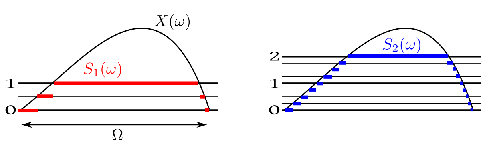

We all know about
Riemann integration. We shall illustrate the idea with a positive, bounded function
$f:[a,b]\rightarrow{\mathbb R}$. The idea is to measure
the area under its graph by approximating it with steps
functions with finitely many steps. We do this from both above and below. For this we partition the domain of the function
into finitely many intervals and raise rectangles on them as follows.
The intuition is that if we take finer and finer partitions and raise the red rectangles as much as we can under the graph,
we shall come arbitrarily close to the area under the graph. If we do the same from above the graph using the blue rectangles,
then also we should come arbitrarily close to the same area. So our intuition dictates that
sup (red area) = inf(blue area),
and we plan to use this common value as the area under the curve. This brilliant intuition has just one loop hole, for many
functions the sup does not equal the inf! We call such functions non-Riemann integrable, and try
to avoid them at all costs. However, these
bad functions cannot be completely avoided, as they crop up naturally from time to time, usually as the limit of Riemann integrable
functions.
Lebesgue had a solution for this. Instead of partitioning the domain his plan was to partition the codomain. So he also
got red rectangles below the graph and blue rectangles above as follows.
And like Riemann he also hoped that
sup (red area) = inf(blue area),
and he wanted to call this the area under the curve. Before exploring this idea further, let's get comfortable with splitting
the codomain.
Just based on these diagrams, you may think that Lebesgue's idea is no different from Riemann's
idea. But actually, Lebesgue's
approximations are more flexible than Riemann's. To understand this look at the graph below, where
we have shown the lower Lebesgue approximation using just 4 points in the codomain.
Just three heights, but so many rectangles!
Each value in the codomain, can give birth to many rectangles, depending on the ups and downs of the curve.
Indeed, a single height can give rise to infinitely many "rectangles"!
For instance, the function
$$f(x) =\left\{\begin{array}{ll}1&\text{if }x\in{\mathbb Q}\cap[0,1]\\ 0&\text{otherwise.}\end{array}\right. $$
takes only two values, 0 and 1. Yet each value is taken infinitely often.
So you can now feel why Lebesgues approximations are more flexible than Riemann's:
Riemann's approximations are special cases of Lebesgue's approximations, but
not vice versa.
As a result here
the sup(red) and inf(blue)
match for a more general class
of functions.
This also shows that if Riemann's sup(red) and inf(blue) areas meet, then so must Lebesgue's, and the meeting
point would be the same.
Now we shall take a rigourous look at Lebesgue's idea. First we need a name for the functions that Lebesgue is using to approximate
areas. We shall call them simple functions.
We can express a simple function mathematically using indicator functions. Let a simple function take only the values $c_1,...,c_k$
(all distinct). Let $A_i = \{\omega\in\Omega~:~f(\omega) = c_i\}.$ An example is shown below.
Clearly the $A_i$'s partition $\Omega$.
The $A_i$'s need not always be just finite union of intervals. For example, in case of the Dirichlet function, we have
just two $A_i$'s, one is ${\mathbb Q}\cap [0,1]$ and the other ${\mathbb Q}^c\cap [0,1].$ However, we always have only
finitely many $A_i$'s. We can now write the simple function as
$$f(\omega) = \sum_{i=1}^k c_i\ind_{A_i}(\omega).$$
Lebesgue wanted to think that each $c_i$ constributes a "rectangle" with height $c_i$ on
the base $A_i.$ Such a "rectangle" should have
area $c_i\times$ length
of $A_i$. But how to measure length of $A_i$'s?
It is this question that first
led him to create measure
theory.
EXERCISE 3: There are two countries $T$ and $S.$ Every inhabitant of $T$ is at least as
tall as every inhabitant of $B.$ Consider the two statements:
the height of shortest inhabitant of $T$ equals that of the tallest inhabitant of $S.$
the height of shortest lady of $T$ equals that of the tallest lady of $S.$
Then which of the following is/are true?
$1\Rightarrow 2$ but $2\not\Rightarrow 1$
$2\Rightarrow 1$ but $1\not\Rightarrow 2$
$1\Leftrightarrow 2$
$1\not\Rightarrow 2$ and $2\not\Rightarrow 1$
EXERCISE 4: Let $A$ be the set of all step functions with domain $[0,1]$ with finitely many steps.
Let $B$ be the set of all simple functions with the same domain. Then which of the following is true?
We are trying to define lengths of subsets of ${\mathbb R}.$
We know that intervals like $[a,b]$ have length $b-a.$
In particular, $[a,a]=\{a\}$ have length 0, and
so $(a,b)$, $(a,b]$ and $[a,b)$ also have the same
length as $[a,b].$
The length of $[a,\infty)$
or $(-\infty, a)$ or $(-\infty, \infty)$ should
be $\infty.$
The length of $[1,2]\cup(100,102)$
should be $(2-1)+(102-100) = 1+2 = 3.$
We can extend this
idea to even countably many disjoint intervals (using infinite
series). Thus the "length" of the set of all rationals in $[0,1]$ should
be 0.
The "length" of all irrationals in $[0,1]$ should
be $1-0=1.$
Proceeding in this way we can extend the
definition of length to a class of subsets of ${\mathbb R}$ which
contains all the intervals, and is
closed wrt countable union, interrsection and complementation.
The smallest such class is a called
the Borel $\sigma $-algebra, and denoted by $\calB.$ Its members are called Borel measurable sets
or just Borel sets.
The "length" of a Borel set, $B$, will be called
its Lebesgue measure, and will be a denoted
by $\lambda(B).$
If $B$ is not Borel, then $\lambda(B)$ is undefined.
As
not all subsets
are measurable. So naturally he restrited his attention to only those simple functions $\sum_i
c_i\ind_{A_i}$, where the $A_i\in\calB.$
The next step in Lebesgue's intuition is to approximate the given function using simple functions,
from below and from above.
We want to make sup(red) and inf(blue) equal. This will happen if and only if
$$\forall B\in\calB~~f ^{-1} (B)\in \calB.$$
Such functions are called measurable
functions.
EXERCISE 5: Find $\int f\, d \lambda,$ where
$$f(x) = \left\{\begin{array}{ll}1&\text{if }x\in{\mathbb Q}^c\cap [0,1]\\ 0&\text{otherwise.}\end{array}\right. $$
What is $\int_0^1 f(x)\, dx$ using Riemann integration?
EXERCISE 6: Prove that $\sum_i c_i\ind_{A_i}$ is measureable if and only if $\forall i~~A_i\in\calB.$
Since the Lebesgue integral exists for all bounded, non-negative measurable functions, hence it is enough to consider only
the sup of the approximations from below. This immediately allows us to define Lebesgue integral
for unbounded, measurable functions
as well. We just allow the sup to be $\infty.$
Similarly we may now carry out the procedure
over an unbounded domain, like ${\mathbb R}$ or $(0,\infty)$ etc. Any "rectangle" with base
length $\infty$ and positive height has area $\infty$, and any "rectangle" with zero
height has zero area (even if its base has measure $\infty$).
Moving from non-negative functions to general functions is easy. For $f:{\mathbb R}\rightarrow{\mathbb R}$ we define $f_+ =\max\{f,0\}$
and $f_- =\max\{-f,0\}.$ Then $f = f_+-f_-.$ We define $\int f\, d \lambda = \int f_+\, d \lambda -\int f_-\, d \lambda,$ if
both the integrals on the rhs are not $\infty.$
EXERCISE 7: Find $\int f(x)\, d \lambda$ where $f:{\mathbb R}\rightarrow{\mathbb R}$ is defined as $f(x)
=\left\{\begin{array}{ll}2&\text{if }x\in{\mathbb Q}^c\\-1&\text{otherwise.}\end{array}\right.$
EXERCISE 8: Find $\int f(x)\, d \lambda$ where $f(x)=x.$
EXERCISE 9: Show that $\int f\, d \lambda$ exists, then so must $\int (-f)\, d \lambda$ and $\int (-f)\, d \lambda = -\int f\, d \lambda.$
For a simple function $\sum_{i=1}^n c_i 1_{A_i}$ we defined the Lebesgue integral as
$$\sum_{i=1}^n c_i \lambda(A_i),$$
where $c_i$ is the height of the $i$-th rectangle, and $\lambda(A_i)$ is the "length" of its base. Then
we took supremum and infimum etc. It
turns out that the entire process of defining Lebesgue integrals need only two properties of
Lebesgue measure: its non-negativity and countable additivity over disjoint sets. The fact that
the length of $(a,b)$ is $b-a$ is not important. This motivates the following
generalisation of the concept of "length":
Our $f:{\mathbb R}\rightarrow{\mathbb R}$ may be replaced by $f:\Omega\rightarrow{\mathbb R}$ for any non-empty set $\Omega.$ Typical choices
for $\Omega$ could be ${\mathbb R}^2$ or ${\mathbb R}^3$ or some finite set. However, any non-empty set would do in general.
We just need some way to measuring the size of subsets of $\Omega.$ For ${\mathbb R}$ we
used "length". For subsets of
${\mathbb R}^2$ we may use "area", while "volume" may be used for subsets of ${\mathbb R}^3.$ For a
finite $\Omega$ we may use "cardinality". All
that we need is that the measure
should be non-negative, and should add up over countably many disjoint sets, i.e., if
we denote the "measure of size" of a set $A\subseteq\Omega$ by $\mu(A)$ then we want
$\mu(A)\geq 0$ and
$\mu(\cup_i A_i) = \sum_i\mu(A_i)$ for disjoint subsets $A_1,A_2,...$
of $\Omega.$
As in the case of "length", it may not be possible in general to define such $\mu$ for
all subsets of $\Omega.$ It is enough to be able to define it for a class of
subsets of $\Omega$. But in order to do mathematical manipulations, that class should be
closed under countable set
operations (union, intersection,
complementation). Any such class, as we have already learned, is called a $\sigma$-algebra.
Once we have decided upon the $\sigma$-algebra and the measure to use, we shall work with simple functions
$\sum_{i=1}^n c_i 1_{A_i}$ where the
$A_i$'s are in the $\sigma$-algebra, so that we may compute $\mu(A_i).$
Let us write down the definition of a measure clearly.
Notice that we have allowed $\mu(A) = \infty.$ For instance, "length" of $(0,\infty)$ is $\infty,$ and
"area" of ${\mathbb R}^2$ is also $\infty.$
Everything else now follows as in case of "length", we have "red rectangles" from below and "blue
rectangles" from above. For a very general class of functions we have sup(red) = inf(blue). For
any such nice function, $f$, we define this common value to be the Lebesgue
integral of $f$ wrt $\mu$, and write it as
$$\int f\, d\mu.$$
In particular, if $f$ is itself a simple function
$$f(x) = \sum_{i=1}^n c_i 1_{A_i},$$
then we have
$$\int f\, d\mu = \sum_{i=1}^n c_i \mu(A_i).$$
Of course, we need all the $A_i$'s to be in the $\sigma$-algebra we are using. Otherwise, $\mu(A_i)$ would
not make any sense.
EXERCISE 10: Let $\Omega = \{1,...,9\}.$ We defne, for any $A\subseteq\Omega$, its measure as
$\mu(A) = |A|,$ the
number of elements in $A.$ Consider $f:\Omega\rightarrow{\mathbb R}$ as $f(i) = i (\mbox{mod }2) + 1.$ Find $\int f\, d\mu.$
EXERCISE 11: Show that any $\sigma$-algebra on $\Omega$ must contain $\phi$ and $\Omega.$
EXERCISE 12: Is $\calP(\Omega)$ a $\sigma$-algebra on $\Omega?$
We have mentioned earlier that for Lebesgue integrals sup(red)=inf(blue) for a rather general class
of functions. In particular, when we worked with $f$ defined on ${\mathbb R}$ equipped with $\calB$
and $\lambda$, we had given a characterisation of all functions for which the Lebesgue
integral $\int f\, d \lambda$ exists:
$$\forall B\in\calB~~f ^{-1}(B)\in\calB.$$
It is not unexpected that if $f$ is defined on $\Omega$ equipped with $\calF$ and $\mu,$ then the
characterisation is
$$\forall B\in\calB~~f ^{-1}(B)\in\calF.$$
Such functions are called measurable functions. These functions are very nicely behaved. In particular limits
of measurable functions are again measurable. This is the most important reason for preferring Lebesgue integration over Riemann integration.
If $f_n\rightarrow f$ pointwise, and $\int f_n\, d \mu$ exist for each $n,$ then the existence of $\int f\, d \mu$
is immediately guaraneteed.
Interestingly, the concept of a measurable function also arises in a different way in probability theory. Let $X$ be
a random variable. We know that underlying every random variable there is a random experiment, or
more precisely, a probability space
$(\Omega,\calF, P)$ such that
$X:\Omega\rightarrow{\mathbb R}.$ When we want to talk
about things like $P(X\in
B)$ we actually mean
$P(\{\omega~:~X(\omega)\in B\})$ or $P(X ^{-1}(B)).$ In order for this to be defined we need $X ^{-1}(B)\in\calF.$
In other words, we need a random variable to be measurable. Indeed, this is part of the definition of a random variable.
Proof:
For $n\in{\mathbb N}$ and $\omega\in\Omega$ we define $s_n$ as follows. First partition the codomain
$[0,\infty)$ into $2$ intervals $[0,n)$ and $[n,\infty)$ and then
subdivide the first into equal subintervals of length $2^{-n}.$ So you get $N=n2^n+1$ subintervals in all. Call
these $[a_1,b_1),...,[a_N,b_N).$ These constitute a partition of the codomain.
Now set $s_n(\omega) = a_k$ if $f(\omega) \in[ a_k,b_k).$
The following picture shows this process for $n=1$ and $n=2.$

Notice how the subdivisions for $n=2$ fit into those for $n=1.$
For each $\omega\in\Omega$ and for each $n\in{\mathbb N}$ we have $s_n(\omega)\leq s_{n+1}(\omega).$
If $s_n(\omega) = a$ and $s_{n+1}(\omega) = b,$ then $f(\omega)\in[a+2^{-n})$ and also $f(\omega)\in[b+2^{-n-1}).$
So, by the contruction of the partitions, $[b+2^{-n-1})\subseteq[a,2^{-n}).$
Thus, $a\leq b,$ as required.
Again, for each $\omega\in\Omega$ we have $s_n(\omega)\rightarrow f(\omega).$
$\forall \omega\in\Omega~~\forall \epsilon>0~~\exists M\in{\mathbb N}~~\forall n\geq M ~~|f(\omega)-s_n(\omega)| < \epsilon.$
$\forall \omega$
Take any $\omega\in\Omega.$
$\forall \epsilon$
Take any $\epsilon>0.$
$\exists M$
Choose $M\in{\mathbb N}$ such that $M> f(\omega)$ and $2^{-M} < \epsilon.$ (Possible since ${\mathbb N}$
is unbounded above and $2^{-n}\rightarrow 0$ as $n\rightarrow \infty.$
This completes the proof.
[QED]
The next step is to show that the red areas indeed converge to the supremum.
Proof:
Shall show
Target
$\forall \epsilon>0~~\exists N\in{\mathbb N}~~\forall n\geq N~~ \int s_n > \int f-\epsilon.$
This will complete the proof, since anyway $\left(\int s_n\right)$ is a non-decreasing sequence bounded
from above by $\int f$
(The case $\int f=\infty$ is trivially
included in it).
Since $\int f = \sup\{\int z~:~ z\leq f,~~z \mbox{ simple}\},$
hence $\exists$ simple $ z\leq f$ with $\int z > \int f-\epsilon.$
Fix some $\delta>0.$
Let $A_n =\{s_n > z-\delta\}.$
Then $A_n\uparrow\Omega.$
Since $s_n$'s are non-decreasing, hence $A_1\subseteq A_2\subseteq A_3\subseteq\cdots.$
Also since $\forall\omega\in\Omega~~s_n(w)\uparrow f(w),$ hence $\cup_n A_n=\Omega.$
So $\int s_n\geq \int_{A_n} s_n \geq \int_{A_n}z \geq \int z-M\mu(A_n^c)-\delta,$
where $M = \max Z.$
Taking limit $\lim \int s_n \geq z- \delta.$
Since $\delta>0$ is arbitrary, we have $\lim \int s_n \geq \int z.$
[QED]
EXERCISE 24:
Show that the convergence in the first theorem is uniform if $f$ is bounded.
EXERCISE 25:
Show that if, in the first theorem above, $f$ is measurable (w.r.t. any given $\sigma$-field $\calF$
over $\Omega$ and the Borel $\sigma$-field over ${\mathbb R}$), then so must be each $s_n.$
We had stated last semester that if $X,Y$ are two jointly distributed random variables with expectations, and $a,b\in{\mathbb R}$
are any two numbers, then $aX+bY$ is also a random variable with expectation, and $E(aX+bY) = aE(X)+bE(Y).$
First we show that $E(X+Y) = E(X)+E(Y)$ in three steps.
Step 1: Show this when $X,Y$ are simple random variables. We have already done this last semester.
Step 2: Show this for non-negative $X,Y.$ Let $(S_n)$ and $(T_n)$ be simplifications for $X$
and $Y,$ respectively. Then $(S_n+T_n)$ is a simplification for $X+Y.$
Also $E(S_n+T_n) = E(S_n)+E(T_n).$ Te result now follows on taking limit of both sides.
Step 3: Show this for general $X,Y.$ Here we apply step 2 to $X_+, X_-, Y_+$ and $Y_-.$
Then we show that for $a>0$ we have $E(aX) = E(X).$ This proof also proceeds in three steps (left as an exercise).
Finally, we show $E(-X)= -E(X).$ Let $Y = -X.$ Then $Y_+ = X_-$ and $Y_- = X_+.$ So $E(Y) = E(Y_+)-E(Y_-) = E(X_-)-E(X_+) = -E(X).$
We have $Z_{n,k} \leq Y_k.$
Taking limit as $k\rightarrow \infty,$ we have $X_n\leq \lim_k Y_k.$
Now taking limit as $n\rightarrow \infty,$ we have $X\leq \lim_k Y_k.$
Also we have $Y_n\leq X_n\leq X.$ So $\lim_k Y_k\leq X.$
Hence $\lim_k Y_k= X.$
This completes the proof.
[QED]
EXERCISE 26:
If $(X_n)$ is a nonincreasing sequence of nonnegative random variables converging to some random variable $X,$
and $E(X_1)<\infty,$ then show that $E(X_n)\downarrow E(X).$ What if the assumption $E(X_1)<\infty$ is
dropped?
EXERCISE 27:
Suppose that $X_n$'s are nonnegative random variables. Show that
$$E(\sum_1^\infty X_n) = \sum_1^\infty E(X_n).$$
In the simple version we assumed that the limit of $(X_n)$ is a random variable. In particular, we assumed that for
each $\omega\in\Omega$ the sequence $(X_n(\omega))$ converges to some real number. We may actually drop these
assumptions. We may allow $(X_n(\omega))$ to diverge. Then the limit $X(\omega)$ is a function from $\Omega$
to $[0,\infty].$ One can then show (not assume) that this $X$ is a random variable. We do this
below.
Then $Y_n\uparrow \liminf X_n.$
So, by MCT, $E(Y_n)\rightarrow E(\liminf X_n).$
Now $E(X_n) \geq E(Y_n).$
Hence
$$E(\liminf X_n) \leq \liminf E(X_n),$$
as required.
[QED]
Proof:
Clearly, $|X|\leq Y.$
So, by triangle inequality, $|X_n-X|\leq |X_n|+|X|\leq 2Y.$
Let $Z_n = 2Y-|X_n-X|.$ Then $Z_n$'s are all nonnegative random variables.
Applying Fatou's lemma to $(Z_n)$, we have
$$E(\liminf Z_n)\leq \liminf E(Z_n) = 2E(Y)-\limsup E|X_n-X| = 2E(Y).$$
Now
$$\liminf Z_n = 2Y-\limsup|X_n-X| = 2Y,$$
and
$$\liminf E(Z_n) = 2E(Y)-\limsup E|X_n-X| .$$
So we have
$$2Y\leq 2Y-\limsup E|X_n-X|,$$
or $\limsup E|X-n-X|\leq 0.$
Hence $E|X_n-X|\rightarrow 0,$ as required.
[QED]
We have used a special case of this theorem, where $\nu$ is a probability measure and $\mu$ is the Lebesgue measure.
Such probability measures are called absolutely continuous. We have worked with the special case where we had
a density that was Riemann integrable as well.